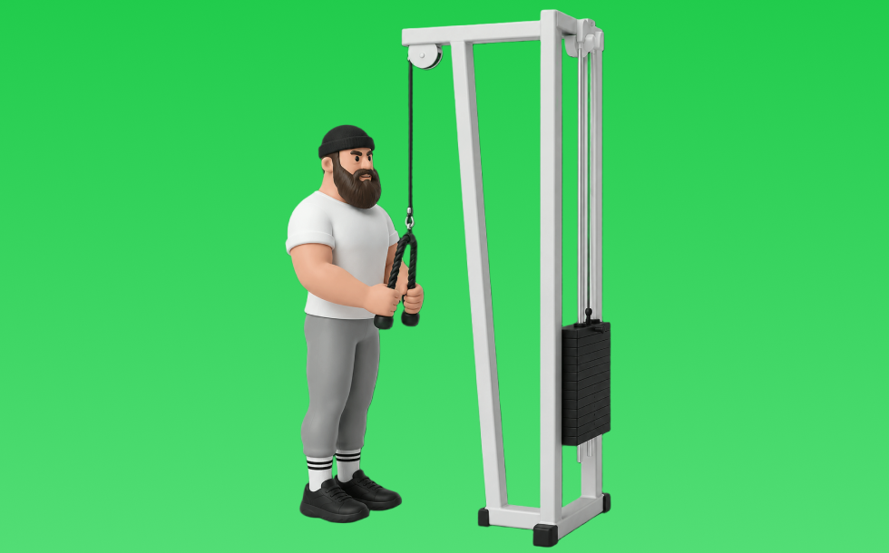

ケーブルトライセプスプレスダウン

ケーブルトライセプスプレスダウンとは、ケーブルを使って「肘を伸ばす」動作で腕（上腕三頭筋）を鍛える種目です。可動域全体で張力が抜けにくいのが特徴で、脇を締めて肘を固定し、押し下げてゆっくり戻す動作を繰り返します。二の腕の厚みづくりやプレス系の補強が期待できます。
- 対象部位
- 腕
- 器具
- ケーブル
- 記録形式
- 重量・回数
- 別名
- プレスダウン / トライセプスプレスダウン / triceps pushdown
YouTube動画
-
【上腕三頭筋トレ】ケーブル(トライセプス)プレスダウンの正しいフォーム・やり方をご紹介 | 「腕を太くしたい人」必見！
-
【初心者必見】ケーブルマシンを使って太い腕を作る！トライセプスプレスダウン
-
【よくある5つの間違い】三頭筋強化種目 ケーブルトライセプスエクステンション篇
-
【FW】ケーブルプレスダウン
-
【二の腕トレーニング】二の腕を鍛えられる"ケーブルプッシュダウン"やり方《心斎橋の女性のためのパーソナルジム・ボディーサーベーション》
-
ローププレスダウン女性実演（ケーブルマシン・二の腕）
-
二の腕引き締めに最強！ケーブルトライセプスプレスダウンのやり方
-
ケーブルで上腕三頭筋(長頭)を鍛える！『オーバーヘッドケーブルトライセプスエクステンション』の正しいやり方を解説します◎
-
【上腕三頭筋】このフォームは異次元の収縮です。鈴木雅選手の上腕三頭筋、絶対デカくなれる究極の2種目です。
-
【確実にデカくなる】三頭筋の王道種目！プレスダウンを寺島遼が徹底解説。
-
【二の腕】トライセップス・プレスダウン
-
【初心者】ケーブル・プッシュダウンの効果的なやり方 | バリエーション別の解説【ビーレジェンド プロテイン】
-
【腕を太くする方法】トライセプスプレスダウンのフォーム・ロープを使った正しいやり方・注意点をご紹介！
-
『ケーブルトライセプスエクステンション(ワンアーム)』の正しいフォーム・やり方をご紹介！
-
これだけでOK！ケーブルだけで効かせる三頭筋トレ3選
-
上腕三頭筋トレーニング 〜ケーブルトライセプスプレスダウン編(ケーブルトライセプスエクステンション)〜
-
極太の腕を作る！トライセップスVバーの使い方【ケーブルマシン】
-
【腕トレ】三頭筋に強烈なストレッチがかかる種目！【ケーブルオーバーヘッドトライセプスエクステンション】
-
【ケーブルマシン】女性が知りたいお尻・二の腕・背中 使い方4選！
YouTubeショート
-
みなさんはプレスダウンどのようにされてますか？？今回は持田選手がプレスダウンを伝授！次はどの種目の解説をやってほしいかコメントしてね！#筋トレ #volix #トレーニング #ちょこっと惜しい
-
【三頭筋】ケーブルプレスダウンで気を付ける4つのポイント #Shorts #腕トレ
-
トライセプスプレスダウンロープ（Triceps Press Down Rope）で行うやり方と基本フォーム
-
正しいトライセップス・プッシュダウンのやり方 | ボディビル日本チャンピオンが解説 #shorts 【ビーレジェンド プロテイン】
-
ケーブルプレスダウン 基本の使用方法解説
-
【よくある間違いケーブルプレスダウン】 #ダイエット #筋トレ #新座市 #志木市 #朝霞市 #ケーブルプレスダウン
-
トライセプスプレスダウン(Triceps Press Down)の基本フォームとやり方
-
こんなケーブルプレスダウンはやめろ！正しいフォーム解説 #筋トレ
-
【腕トレ】上腕三頭筋を鍛えるケーブルプレスダウンのやり方解説
-
ケーブルプレスダウンのやり方#初心者 #ジム #二の腕
-
3頭筋をデカくするプレスダウンを鈴木佑輔さんが解説！
-
先生! 腕が太くなるおすすめの種目は？ ＃Shorts #助けて山本先生 ＃筋トレ大学
-
ケーブルエクステションの正しい位置
-
【両店共通】ケーブルプレスダウン 使い方動画
-
【1分で分かるマシンの使い方】ケーブルプレスダウン編 #Shorts
-
【ケーブル トライセプスプレスダウン】
-
今さら聞けないケーブルプッシュダウンのやり方説明してるで‼️#トレーニング #パーソナルトレーニング #フィットネス #筋トレ #プロテイン #ワークアウト #腕トレ #三頭筋
-
【女性オススメ】マシンで二の腕を一気に引き締める筋トレ！【プレスダウン】
-
はじめてのプレスダウン
-
【筋トレ】トライセプスプレスダウン【上腕三頭筋】#shorts
-
正しいラットプルダウン4つのポイント【筋トレ】
-
cable triceps press down ケーブルトライセプスプレスダウン #shorts
-
持田選手直伝のフレンチプレス。実はフォームが大事 #トレーニング #筋トレ #volix
-
【トレーニング解説】ケーブルプレスダウンポイント🔥初心者におすすめ！三頭筋のトレーニングです！#筋トレ #初心者 #ジム #トレーニング #解説動画 #ボディビル #ダイエット#初心者向け #筋肉
-
トライセプスプレスダウン-リバースグリップ（Triceps Press Down Reverse Grip）のやり方と基本フォーム
-
バンドで二の腕を刺激！プレスダウン
-
上腕三頭筋を最大限鍛える方法【筋トレ】
-
上腕三頭筋トレーニング（ケーブルプレスダウン）
-
【上腕三頭筋トレ】ケーブルプレスダウンのやり方解説 #筋トレ #トレーニング #腕トレ
動作方法
- 肘を固定し、肩の力みを減らす
- 狙う部位で押し切る
- 可動域を保って戻す
動作ポイント
- 肘を開きすぎない
- 肩をすくめない
ワンポイントアドバイス
- 肘の位置を固定すると狙った部位に効きやすい
- 回数を急がず、下ろし動作を丁寧に行う
目的別回数設定
目的や体力に応じた一般的な目安です。無理のない範囲で調整してください。
- 筋力アップ
- 1〜5回
- 筋肥大
- 6〜12回
- 持久力アップ
- 13〜20回
YouTube動画について
動画はYouTubeの公開情報をもとに表示しています。内容は投稿者によるもので、Biggrによる監修ではありません。
アプリを入手
筋トレやトレーニングの記録はBiggrにお任せください。今すぐ無料で使い始められます。